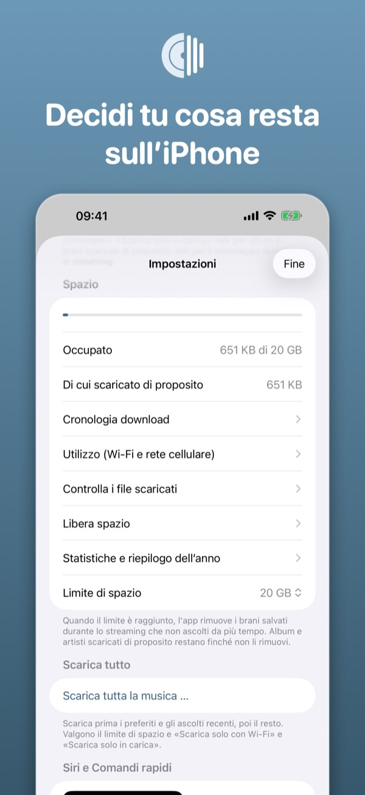
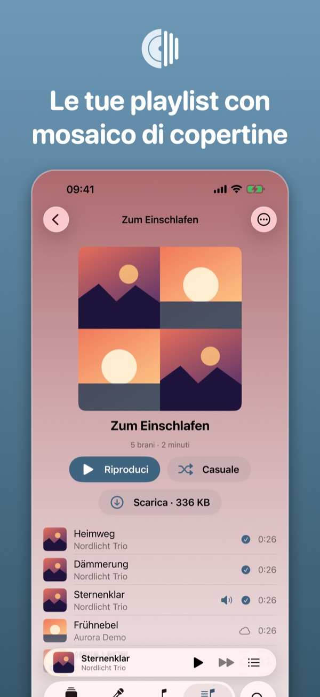
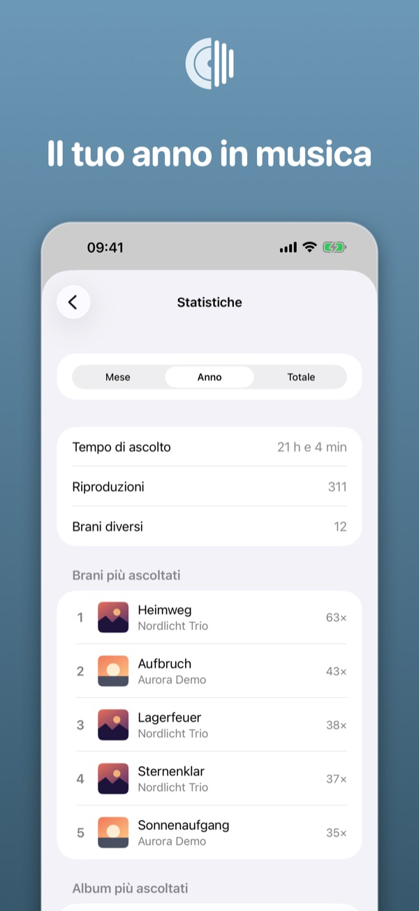
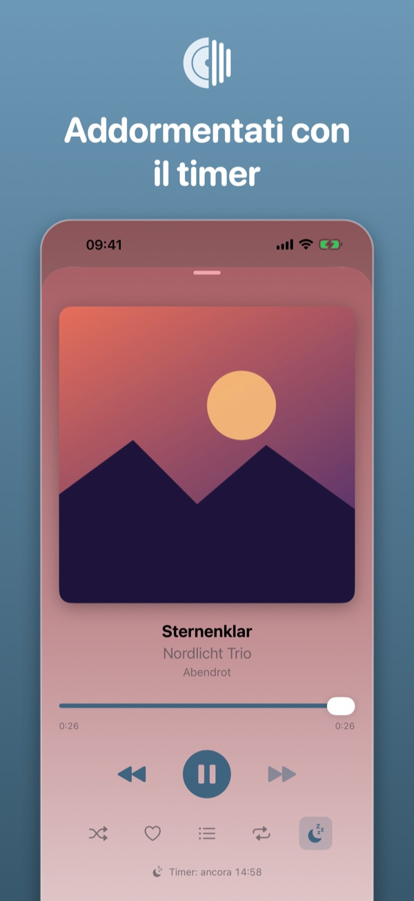
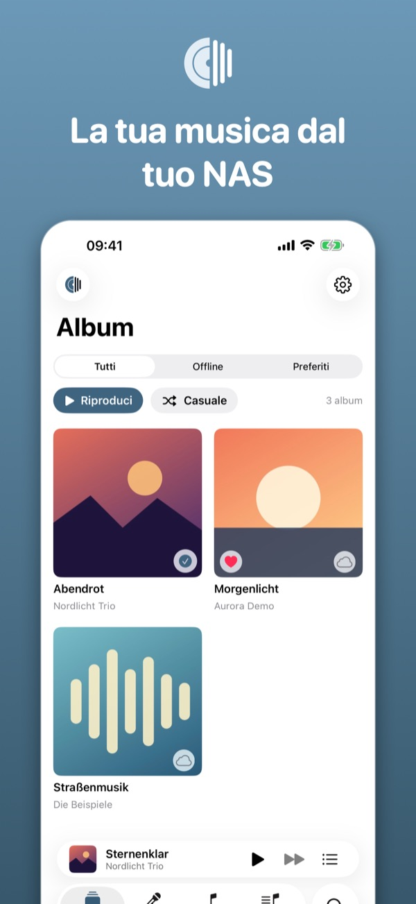
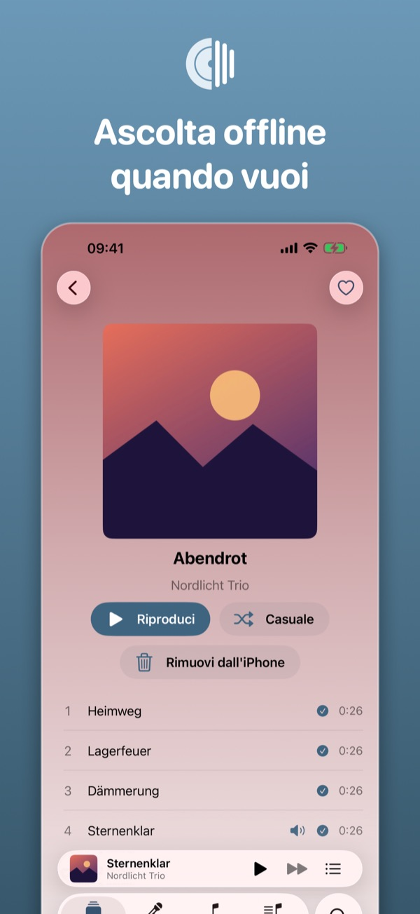
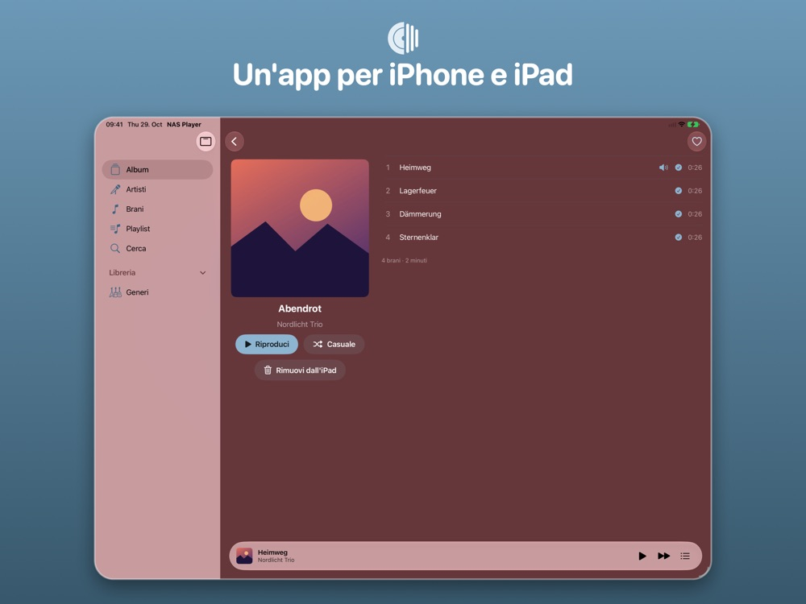
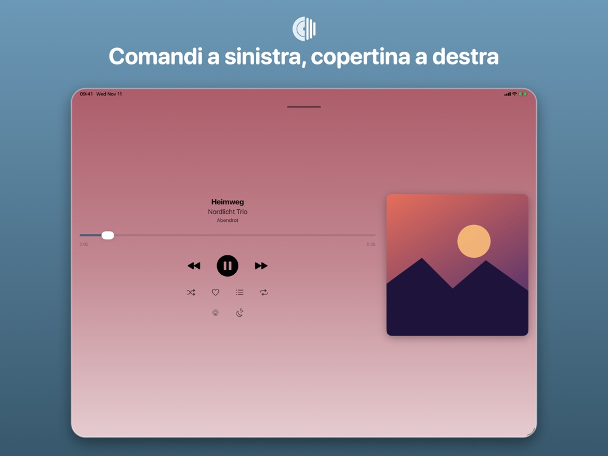
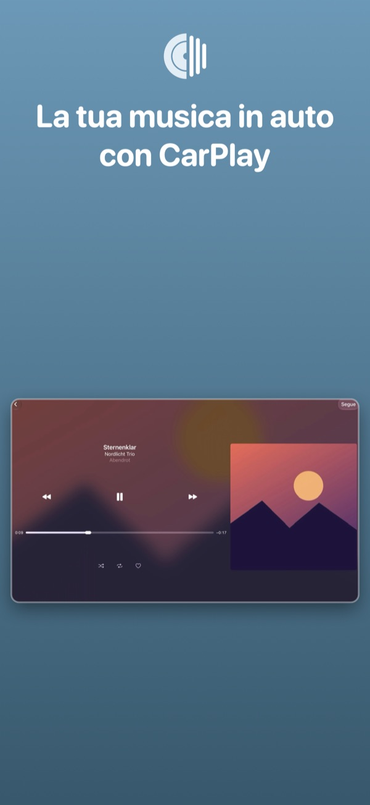

IPHONE
Tutta la libreria in tasca
Album, download offline, spazio, playlist, statistiche e timer di spegnimento su iPhone.




Riproduce la musica del tuo NAS Synology (Audio Station) su iPhone e iPad: streaming, ascolto offline, CarPlay e Siri. Gratis, senza pubblicità né tracciamento.
 Gratis · nessun acquisto in-app
Gratis · nessun acquisto in-app


Su iPhone, su iPad e in auto: la stessa libreria, gli stessi preferiti, la stessa musica.
Album, download offline, spazio, playlist, statistiche e timer di spegnimento su iPhone.




Un'app per iPhone e iPad: barra laterale, pagina album a due colonne e un player con comandi a sinistra e copertina a destra.


Scegli da Home, Libreria, playlist e generi direttamente in auto.

A casa l'app trova il NAS da sola. In viaggio usa un indirizzo https o QuickConnect.
Scarica album e artisti sul dispositivo di proposito. I download continuano in background.
A casa, in viaggio o senza rete: ciò che hai scaricato suona ovunque, il resto arriva in streaming dal NAS. In auto scegli con CarPlay direttamente sul display.
Un NAS Synology con Audio Station raggiungibile a un indirizzo https con certificato valido o tramite QuickConnect. Senza NAS puoi provare l'app in modalità demo.